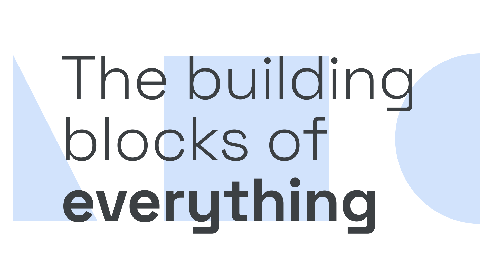

Geometric
By Google Fonts Knowledge contributors · Google Fonts Knowledge.
Original article · Source on GitHub · CC BY-SA 4.0. Text, illustrations and existing credits reproduced from the licensed Knowledge repository. Open Shelf adapted the layout and links; these adaptations are also CC BY-SA 4.0. No endorsement implied.
“Geometric” is a genre (and sometimes historical) classification of typefaces—almost always sans serifs—so called because of their geometric construction: the circles, triangles, and straight lines that form the core shapes of their letterforms.

Examples of Geometric typefaces include DM Sans, Poppins, and Raleway. The repeating, similar shapes within these typefaces can hinder readability, making them less ideal for body text.
It should be noted that even typical Geometric typefaces are not entirely geometric in construction: For us to perceive something as perfectly geometric, it’s necessary for the type designer to apply optical corrections. Overshoots, ovals instead of perfect circles, horizontals at 90% thickness of the verticals, crossbars above the midpoint, etc., are all still present in geometric faces.
Geometric typefaces became popular in the early 20th century and enjoyed a resurgence in the 1970s and 1980s. Geometric typefaces don’t necessarily come from these periods in history.